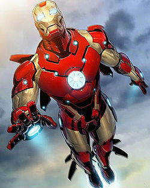

Iron Man an American billionaire playboy, industrialist and ingenious engineer.
Ironman was created by writer-editor Stan Lee, developed by scripter Larry Lieber, and designed by artists Don Heck and Jack Kirby.
Tony Stark suffers a severe chest injury during a kidnapping in which his captors attempt to force him to build a weapon of mass destruction. He instead creates a powered suit of armor to save his life and escape captivity. He later uses the suit and successive versions to protect the world as Iron Man. Through his corporation ― Stark Industries ― Tony has created many military weapons, some of which, along with other technological devices of his making, have been integrated into his suit, helping him fight crime. Initially, Iron Man was a vehicle for Stan Lee to explore Cold War themes, particularly the role of American technology and business in the fight against communism. Subsequent re-imaginings of Iron Man have transitioned from Cold War themes to contemporary concerns, such as corporate crime and terrorism.
